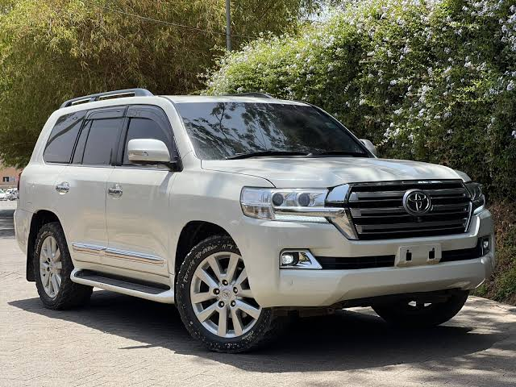
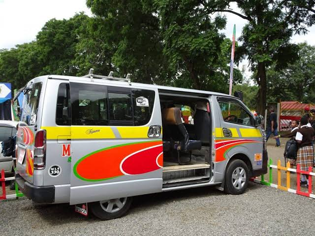
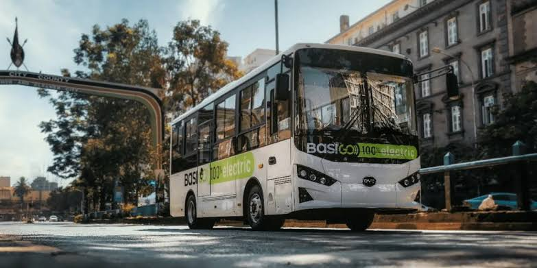
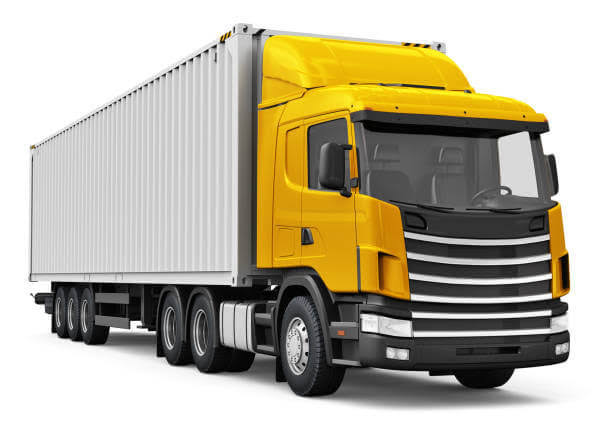

Overview
---> Cars
A car, or an automobile, is a motor vehicle with wheels. Most definitions of cars state that they run primarily on roads, seat one to eight people, have four wheels, and mainly transport people rather than cargo. There are around one billion cars in use worldwide.

A minibus, microbus, or minicoach is a passenger-carrying motor vehicle that is designed to carry more people than a multi-purpose vehicle or minivan, but fewer people than a full-size bus. Mostly used by fleet managers. They are also called Fleets in our roads or "Matatus".

Bus is a motor vehicle that carries significantly more passengers than an average car or van, but fewer than the average rail transport. It is most commonly used in public transport, but is also in use for charter purposes. Many of the busses are owned by big companies in our country, e.g., Safaricom, Kenya Power or Rwaken services.

Trucks are motor vehicles designed to transport freight, carry specialized payloads, or perform other utilitarian work. They vary greatly in size, power, and configuration, but the vast majority feature body-on-frame construction, with a cabin that is independent of the payload portion of the vehicle. Trucks can be classified as either straight or articulated. A straight truck is one in which all axles are attached to a single frame.
